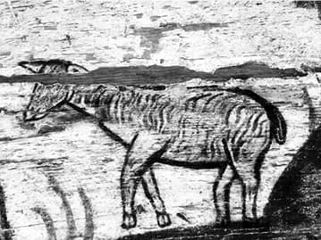

Istoria hranei începe pentru omenire, în lumina referatului biblic, cu hrana din Eden [Facerea 1, 29] și de la Pomul cunoștinței binelui și răului [Facerea 2, 16-17] și (ne)sfârșește cu Pomul Vieții - Crucea lui Hristos și la masa din Împărăția Tatălui, când Hristos va bea, într-un fel nou, inimaginabil, cu ucenicii Lui, Potirul euharistic [Matei 26, 29]. Acest parcurs poate fi privit și prin prisma unui șir de mese importante la scara istoriei mântuirii. Momentul de răscruce este acela de la Cina cea de Taină, în care Hristos S-a constituit în hrană dătătoare de viață pentru omenire și S-a dăruit ca atare.
Imediat după încheierea creației, după ce i-a dat omului porunca înmulțirii și în stăpânire întreaga lume, Dumnezeu S-a preocupat de hrănirea lui. „Apoi a zis Dumnezeu: «Iată, vă dau toată iarba ce face sămânță de pe toată fața pământului și tot pomul ce are rod cu sămânță în el. Acestea vor fi hrana voastră»” [Facerea 1, 29]. Deși făcut după chipul și asemănarea lui Dumnezeu, ființă eminamente spirituală, omul, datorită componentei sale materiale, avea nevoie de hrănire. Creatorul omului este totodată Creatorul hranei sale. Hrana l-a precedat pe om, ea exista deja în momentul facerii lui. Dumnezeu pregătise omului toate cele necesare viețuirii, așa cum pregătești la așteptarea venirii pe lume a unui copil. Își vădea și în acest chip caracterul patern! Totodată, este de observat cum hrana destinată atunci omului era numai vegetală, și anume purtătoare de sămânță. Sămânța era aceea care permitea să se recunoască dacă o plantă era sau nu era bună de mâncat. Căderea va aduce și o schimbare a „meniului”. Mai întâi, Dumnezeu, supărat, îi spune lui Adam că de-acum hrănirea sa va cere multă trudă; apoi, ca alimente îi pomenește iarba (o coborâre de la roadele aeriene ale pomilor la nivelul solului) și pâinea (așadar, pentru prima dată apare prelucrarea alimentelor primare, printr-o muncire a lor: îmblăcire, măcinare, frământare, coacere).
Sfântul Efrem spune că în Grădina Slavei, Adam a fost dotat, îmbogățit, cu tot felul de prestigii, printre care și acela al hranei (Imnele Paradisului XIII,3). Poetul consideră, așadar, hrana ca pe un prestigiu1. Aceasta poate explica cum a fost posibil, mai târziu, ca Hristos să Se constituie pentru om într-o hrană (hrana euharistică).
Dumnezeu S-a arătat lui Avraam la stejarul de la Mamvri, într-o zi pe la amiază, sub forma a trei Oameni (Îngeri). Avraam I-a ospătat cu azime proaspăt frământate și coapte din făina cea mai bună, cu unt, cu lapte și cu un vițel tânăr și gras, gătit în grabă. După cum se poate vedea, hrana provenea din toate cele trei categorii: vegetale, lactate și carne. Nu se pomenește nimic despre băutură. În timp ce Dumnezeu mănâncă, Avraam și Sarra nu stau la masă cu El, ci numai în preajmă, întru slujire. Între Domnul și Avraam are loc o convorbire memorabilă. Temele sunt de o mare încărcătură existențială. Sarra cea stearpă, prin binecuvântare divină, va naște fiu la vârstă înaintată. Sodoma și Gomora vor fi date pierzării pentru păcatele lor (și acum are loc extraordinara „târguială” a lui Avraam cu Dumnezeu pentru salvarea celor două orașe). Și încă un lucru foarte important: din acest moment Avraam devine strămoș comun al multor neamuri [Facere 22,18], acesta fiind și unul dintre motivele pentru care, iconic și iconografic, îl aflăm acum în rai, adăpostind la sânul lui („sânul lui Avraam” – Luca 16, 22] pe cei drepți.
La masa sărbătorească și ceremonială de la Cana a împlinit Iisus Hristos prima Sa minune menționată în Evanghelii. Hristos a venit la această masă după cele 40 de zile de post încununate de biruința asupra diavolului, ale cărui ispitiri le-a respins. Iisus nu a operat minunea introducând materii noi, nemaivăzute sau nemaiîntâlnite, străine creației inițiale, ci a lucrat transformând semnificativ și profetic materii deja create, pentru a arăta că este nu numai creatorul, dar și stăpân atotputernic asupra lor mereu. Nunta de la Cana reprezintă „un prim semn” vizibil de realizare a epocii mesianice așteptate (Sfântul Efrem Sirul, Comentariu la Evanghelia Concordantă sau Diatessaron XII,2). Transformarea apei în vin a fost o transformare reală, dar, în același timp, o transformare cu conotații eshatologice, sugerând cum, la sfârșitul veacurilor, creaturile, în primul rând oamenii, vor fi reînnoite de o manieră asemănătoare cu cea a apei la nunta de la Cana. Totodată, la un orizont mai apropiat, această transformare spune despre posibilitatea și necesitatea transformării omului vechi în om nou, prin Hristos.
Minunea de la Cana își arată aspectul său euharistic, mai ales dacă este pusă în relație și cu minunea înmulțirii pâinilor [Ioan 6, 1-15].
Nunta de la Cana este pusă de Sfântul Efrem în legătură cu parabola nunții fiului de împărat [Matei 22, 1-10]. Oamenii L-au invitat la nuntă și Iisus a acceptat; El îi invită acum, la rândul Său, la masă (cea euharistică), iar ei Îl refuză sub diferite pretexte. Dacă El s-a lăsat invitat la masă de niște oameni, cu atât mai mult sunt vinovați oamenii care refuză invitația Sa la masa euharistică, care este tot o masă de nuntă, una mistică.
Cina este un moment crucial al istoriei mântuirii2, practic masa cea mai importantă din toată istoria mântuirii, când are loc o trecere decisivă, radicală, de la lumea Vechiului Legământ spre cea a Noului Testament. Două alimente esențiale marchează această trecere: mielul pascal și pâinea. Euharistia (Trupul și Sângele lui Hristos) și Crucea (Pomul Vieții cu Rodul lui – Hristos) înlocuiesc mielul pascal, pâinea azimă și ierburile amare ale evreilor (Sfântul Efrem Sirul, Imnele Fecioriei XI,9). Mielul nu va mai fi de-acum mijloc de jertfire, ci numai o amintire de Mielul adevărat - Hristos, care S-a jertfit o dată pentru totdeauna, ca ultimă jertfă sângeroasă adusă de om lui Dumnezeu. Iar pâinea-azimă va fi înlocuită cu Pâinea (dospită) - Trup al lui Hristos. (Conotațiile simbolice ale prezenței sau absenței plămadei sunt importante.) Hristos a împlinit la Cină cele alimentare ale Paștelui vechi evreiesc, pentru a instaura hrănirea nouă, spirituală, a Paștelui cel nou, mântuitor.
Încărcate de semnificații și, ca atare, de luat în seamă sunt și cele câteva mese luate de Hristos cu ucenicii Lui în perioada dintre Înviere și Înălțare. Sunt întâlniri la care, între altele, Hristos, mâncând, a vrut să-i convingă pe Apostoli de realitatea trupului Său înviat, de faptul că nu este o nălucă.
Suntem curând după Înviere, în chiar ziua Învierii. Seara, după un drum mai îndelung făcut împreună cu Iisus, fără să-L recunoască, la masă, după binecuvântarea și frângerea pâinii, Luca și Cleopa, doi dintre ucenicii Lui, au văzut că este El. El li S-a descoperit. Și atunci ei și-au amintit cum ardea în ei inima lor înainte, în timp ce mergeau pe cale și El le tâlcuia Scripturile.
În aceeași seară, Iisus intră în cenaclul apostolilor, binecuvântându-i: „Pace vouă!” [36]. Cere de mâncare și primește o bucată de pește fript și dintr-un fagure de miere, pe care le mănâncă „în fața lor” [41-43]. La Marcu [16, 14] se spune numai că a venit pe când ei ședeau deja la masă.
Iisus apare între ucenici și le cere de mâncare, iar aceștia nu au ce să-I dea, pentru că nu prinseseră deloc pește în noaptea aceea. La îndemnul lui Hristos pescuiesc din nou, acolo unde le arată El, și de data aceasta li se rupe mreaja de mulțimea peștilor prinși. O lectură atentă, ne arată că peștele care le este dat de Hristos ca să-l mănânce la început nu este din peștele pescuit de ei, este un altul, al Lui, fript pe jăratec. Nici pâinea nu este cea a Apostolilor. Hristos cere hrană obișnuită, oferind în schimb o hrană cu caracter euharistic. Acum are loc dialogul celebru cu Petru, care este întrebat de trei ori dacă-L iubește pe Domnul, și de trei ori își afirmă el iubirea, după care i se spune: „Paște oile mele!”.
Unele mese se petrec la prânz (la Mamvri, la Marea Tiberiadei), dar cele mai multe seara (Nunta de la Cana, Cina cea de taină, Cina de la Emaus, cina cu pește și miere). Toate produc o mare bucurie, prin prezența lui Dumnezeu și prin lucrarea aferentă. Toate sunt purtătoare de taină, sunt mistice, dar prilejuind, de fiecare dată, descoperiri importante în legătură cu Dumnezeu sau cu destinul umanității. Toate aceste mese sunt însoțite de o luminare în ceea ce privește realitatea învierii cu trupul a lui Hristos, precum și a înțelegerii Scripturilor [Luca 24, 45]. La Emaus și la Marea Tiberiadei, Iisus nu a fost recunoscut de la început, ci ochii li s-au deschis apostolilor numai în momentul în care El a mâncat cu ei. Dar revelările care se fac sporesc taina, nu o diminuează. Toate au fost mese care conduceau simbolic sau tipologic către masa euharistică. Totodată, în acest fel, este pusă în evidență componenta cognitivă, revelatoare, a actului de hrănire. Jertfa euharistică nesângeroasă se aduce pe masa altarului, masă esențială, străjuită de Pomul Vieții - Crucea, cu Fructul ei dătător de viață - Hristos. Masa altarului masa la care Hristos invită continuu pe toți cei botezați. Și ea ar trebui să fie modelul și ținta tuturor meselor.
La rândul ei, masa euharistică este cea care apropie în chip decisiv de Masa Împărăției. De la masa altarului până la masa lui Iisus, ca masă a Împărăției, drumul este direct. Omul va continua, într-un fel, să se hrănească și pe lumea cealaltă, urmând promisiunii lui Hristos: „de acum nu voi mai bea din acest rod al viței până in ziua aceea când îl voi bea cu voi, nou, în Împărăția Tatălui Meu” [Matei 26, 29 // Marcu 14, 25 // Luca 22, 18]. Masa Împărăției este pusă de Dumnezeu în rai [cf. Luca 22, 30]. Așadar, adunarea celor aleși în paradis este imaginată ca o masă: Masa Împărăției, masa sfinților3. În literatura patristică, Masa Împărăției apare ca un ospăț fără pereche, neobosit (Sfântul Efrem Sirul, Imnele Paradisului IX,9), un festin. Ea este o masă a „sfinților” (a celor destoinici, a celor câștigători, a celor care au reușit să ajungă cu bine la liman), pregătită de Fiul lui Dumnezeu pentru cei botezați, în care El a pus lumina Sa. Creștinii toți sunt invitați. A te ospăta la masa Împărăției reprezintă o răsplată pentru faptele bune din această lume. Ospățul lui Iisus este cast și frumos, spre bucurarea poporului Său. Toți cei întristați vor fi odihniți de suferința lor.
Există o foame a trupurilor, dar există și o foame a sufletului. Or, în rai, spre deosebire față de pământ, sufletele sunt acelea care mănâncă. De fapt, se poate vorbi mai degrabă de a gusta decât de a mânca, căci o cantitate mică produce sațietate. De altfel, mai toate rugăciunile care se fac de Biserică cu prilejul binecuvântării diferitor ofrande pomenesc de gustarea lor. Desigur că gustarea este desăvârșit împlinită în împărtășirea din Potirul euharistic. Celora care vor să ajungă la gustarea din rai li se recomandă să înceapă a se comporta astfel față de mâncare încă din această viață, căci hrana a fost dată de Dumnezeu „spre gustare cu mulțumire” [1 Timotei 4, 3]. Alimentele paradiziace au proprietăți cu totul speciale. Roadele din rai sunt o comoară oferită culegătorului lor.
Între toate mesele menționate există trimiteri și legături reciproce mai evidente sau subînțelese. Participarea lui Hristos la masa de la Cana amintește prin implicațiile sale de participarea Sfintei Treimi, în chipul celor trei îngeri, la masa lui Avraam, la Mamvri [Facerea 18, 1-8], sau la cea a lui Lot [Facerea 19, 1-3]. Un arc spiritual cu un puternic conținut soteriologic unește prima și cea din urmă masă a lui Hristos luată cu oamenii în perioada misiunii Sale vădite. De la apă la vinul cel bun – la Nuntă, de la vin la Sângele euharistic al lui Hristos – la Cină, acestea sunt treptele scării care urcă din această lume la rai.
Este de o intensitate maximă la aceste mese cu Hristos. Hrana devine tot mai spirituală și, totodată, se însoțește cu cuvântul decisiv al lui Dumnezeu. Binecuvântarea are și ea acest rol de însoțire cu cuvântul cel bun. Sunt cuvinte care, într-un fel, fixează cursul istoriei. Totodată au loc transformări importante, transfigurări, atât la nivelul persoanelor, cât și la acela al unor materii: Sarra din stearpă devine fertilă, apa devine vin, pâinea și vinul devin Trup și Sânge.
Există, așadar, un lanț de mese împărătești: masa lui Avraam – masa Nunții de la Cana – masa de la ultima Cină (reluată continuu în Biserică prin Euharistie) – masa Împărăției (masa sfinților). De fiecare dată Dumnezeu participă, de fiecare dată consecințele existențiale sunt decisive pentru omenire, pentru mântuirea ei. Și asta pentru că Dumnezeu pe de o parte Se descoperă, Se dezvăluie, iar pe de altă parte și descoperă, revelează adevăruri de credință importante. Toate aceste mese sunt actualizate și se regăsesc în chip iconic în masa euharistică!

De la bun început, hrănirea a fost încărcată cu o componentă spirituală: „Și a făcut Dumnezeu să răsară din pământ tot soiul de pomi, plăcuți la vedere și cu roade bune de mâncat” [Facerea 2, 9]. Trebuia, așadar, ca omul să se hrănească fizic (cu fructe), dar și spiritual (cu privirea)4. Căderea va fi și ea atât fizică, cât și spirituală: moarte, dar și dispoziție spre păcătuire.
Există o hrană pentru trup și o hrană pentru suflet, o hrănire fizică și una spirituală. Se cere ca omul să ajungă la dreaptă măsură, la echilibru, să păstreze o bună proporție între cele două. Omul, mai ales cel necredincios, are prea adesea tendința de a se îngriji mai mult de trupul său decât de suflet. El vrea să transforme orice masă într-o mare plăcere trupească, neglijând componenta spirituală.
Întruparea lui Hristos și parcursul Lui istoric au făcut ca lumea să capete o conștiință mai clară asupra conținutului spiritual al hranei, conținut care de altfel și sporește. Apoi, cu Învierea, se face pasul mai departe, hrana căpătând o încărcătură pascală, caracterizată prin jertfă și răscumpărare. Hrana este chemată de-acum să contribuie decisiv la transfigurarea omului. Pentru a se ajunge la această hrană spirituală numai natura nu este suficientă, mai este necesar a se adăuga credința și voința omului. Hristos a adus o hrană nouă, de folos, care presupune maturitatea spirituală a credinciosului. De aceea, El a venit în trup în lume numai atunci când a considerat-o coaptă și pregătită, din acest punct de vedere. Chiar dacă S-a lăsat hrănit de om, Hristos este forța hrănitoare a întregului univers și hrana supremă a celor care-L recunosc ca Mântuitor. O hrană cu consecințe eshatologice fericite. Dar pentru a ajunge la Înviere și pentru a aduce pe om la posibilitatea de a birui moartea, Hristos S-a făcut pentru o clipită pe Sine Însuși hrană pentru moarte, înlocuindu-l pe Lazăr, pe care-l înviase, după cum comentează Sfântul Efrem Sirul. După ce hrana capătă pe parcursul istoriei omenirii o încărcătură spirituală tot mai mare, ea devine în rai eminamente spirituală.
Cei atenți ajung să constate funcționarea unui soi de principiu al compensării hrănirii fizice prin hrănire spirituală, unde și reciproca este adevărată, în sensul că abundența hranei fizice scade puterea de asimilare a hranei spirituale.
Euharistia. Hrana trupească rămâne, în creștinism, numai un punct de plecare. În viziune creștină tradițională, hrana conduce spre Euharistie, hrană transfigurată, pogorând din altă lume. Sfântul Efrem Sirul chiar o numește pâinea îngerilor. Pâinea și vinul sunt materiile privilegiate ale acestei hrăniri. În viața de toate zilele, în calitatea lor de simple alimente, pâinea întărește, iar vinul bucură inima omului [cf. Psalmul 103, 16-17]. În Euharistie esențial este faptul că pâinea și vinul devin Trupul și Sângele lui Hristos. Dacă pâinea și apa sunt alimente indispensabile pentru viața pământească (ele constituie singura alimentație în temnițele austere, de pildă), pâinea și vinul euharistic (care constituie adevărate minuni) sunt alimente indispensabile pentru viața veșnică. Cele dintâi hrănesc fizic la limita supraviețuirii, cele din urmă satură spiritual deplin.
Se mănâncă în Euharistie mai mult decât pâine și vin, se mănâncă Viața care este Hristos [„Eu sunt… Viața” – Ioan 14, 6]. Este o hrană care asigură nu numai viața zilnică, dar și pe cea veșnică, o garantează, într-un fel. Pâinea euharistică este un elixir al vieții (Sfântul Efrem Sirul, Imnele Nașterii Domnului XIX,16), iar Potirul euharistic este un potir al vieții, fiecare picătură a conținutului său fiind purtătoare de viață. Acest Potir este alimentat de la Vița-Hristos5. Dacă vinul obișnuit transformă, în orice caz, persoana, și poate conduce la cădere, transformarea venită prin vinul euharistic este existențială și mântuitoare.
Pentru mulți Sfinți Părinți, Euharistia este „cărbune de foc” (a se vedea și Isaia 6, 6). În ea se consumă, efectiv, foc și Duh, care, în principiu, nu sunt comestibile. În pâinea euharistică este prezent același Duh-foc care a consumat jertfa profetului Ilie (Sfântul Efrem Sirul, Imnele Credinței X,13)6.
Euharistia este absolut necesară adevăratului creștin, care are ca ideal sfințirea sa. Ea dovedește că lumea este capabilă de a fi transfigurată prin cooperarea omului cu Sfântul Duh. Transfigurarea, pregătirea pentru Împărăție, iată propunerea și rezultatul Euharistiei. Euharistia în sine este o taină absolută, făcută totuși accesibilă, în chip mistic, credincioșilor.
Altădată, Avraam a oferit Sfintei Treimi (așa cum a apărut Ea atunci, sub chipul a trei Îngeri), unor ființe spirituale, o hrană pământească, acum Dumnezeu S-a constituit în hrană cerească spirituală pentru urmașii lui.
Euharistia răspândește viață, lumină, este considerată o adevărată comoară existențială, aducând, practic, o nouă creație a omului. Există o relație între Botez și Euharistie, ele împreună alimentând viața Bisericii. Ceea ce începe prin Botez, trebuie întreținut și actualizat, mistic și real, în același timp, prin Euharistie. Sângele lui Hristos nu pătrunde numai în trupul celor ce se împărtășesc, dar și în duhurile lor, reușind în acest chip acea unire isihastă, atât de dragă misticii ortodoxe.
Euharistia include atât Nașterea, cât și Învierea, căci același trup al lui Hristos a ieșit mai întâi din pântecele veșnic fecioresc al Maicii lui Dumnezeu și, mai târziu, înviat din mormântul pecetluit. Avem de a face, de asemenea, cu o identitate efectivă între trupul fizic al lui Hristos și Trupul Său euharistic. S-a ajuns la această identitate prin jertfă divină, prin pătimirea, moartea și învierea lui Hristos. Liturghia vorbește neîncetat despre toate aceste realități, despre această unitate. De pildă, la epicleză, preotul spune despre pâinea ce urmează a deveni Trup „sfarmă-se”. Hrana euharistică este, mai întâi, o ofrandă făcută lui Dumnezeu, care apoi ni se întoarce transfigurată de El. Mai mult, Sfântul Duh „(…) se amestecă în pâine pentru ca aceasta să devină / o ofrandă” (Sfântul Efrem Sirul, Imnele Credinței XL,10). Există o colaborare strânsă dintre Hristos și Duhul, și în cele din urmă o implicare a tuturor Persoanelor Sfintei Treimi în Euharistie.
Euharistia nu este un simbol: „Trupul Meu este adevărată mâncare și Sângele Meu adevărată băutură”, spune Hristos [Ioan 6, 55]. Evident, treapta superioară de a se hrăni este pentru un creștin aceea de a-L avea pe masa sa pe Cuvântul-Hristos. Omul obține o hrană nouă, căci Hristos a dat spre gustare celor care sunt cu El, odată cu Trupul Său, însușirile Sale.
Euharistia poate salva din diverse situații dificile concrete, din tot felul de pericole de moarte (trupească sau spirituală), care survin adesea pe parcursul vieții personale sau în cea a comunității.
De o importanță capitală este faptul că rolul Trupului și al Sângelui lui Hristos este și acela de a uni coerent și rodnic oamenii într-un trup unic al Bisericii, că Biserica este construită și întărită în jurul Euharistiei. Prin Trupul lui Hristos cu care creștinii sunt hrăniți, ei sunt adunați în turmă. Cu alte cuvinte, dacă o masă obișnuită reușește să unească un număr mai mic sau mai mare de oameni, cu cât mai mult această Masă euharistică.
Foarte important prin consecințele sale la varii niveluri, de la cel familiar la cel universal, este caracterul comunicativ și comunitar al hranei, atât în ceea ce privește planul vertical al relației cu Divinitatea, cât și planul orizontal al comunicării mai apropiate cu semenii.
1 Oarecum în această linie, ar fi de observat că mâncarea se gătește sau se pre-gătește, ceea ce presupune și un aspect de finisare, de împodobire, de sporire în bunătate a ceea ce se pune inițial în componența unor bucate.
2 Pornind de la opera Sfântului Efrem Sirul, Pierre YOUSIF observă cum „Cina restabilește o ordine violată: este reluarea prieteniei în lucrarea harului” (La Vierge Marie et l’Eucharistie chez saint Éphrem de Nisibe et dans la patristique syriaque antérieure, în Études Mariales, Bulletin de la Société Française d’Études Mariales, 1979-1980, Paris, p. 56). Reluarea prieteniei…, iată ceva cu adevărat demn de toată bună vibrația noastră!
3 În icoanele românești pe sticlă, aflăm tema Masa raiului. Această masă este reprezentată printr-o cruce greacă; în cele patru spații ale icoanei, care capătă aspectul unei vechi și simple ferestre, sunt pictate următoarele imagini: Maica Domnului cu Pruncul; Iisus Hristos; un arhiereu – de obicei Sfântul Nicolae; o mucenică – de obicei Sfânta Varvara sau Sfânta Paraschiva.
4 Limba română, probabil și altele, are această exprimare: „a mânca din ochi”. În aceeași familie de exprimări, se află și aceasta, prin care se dorește să se exprime și să se comunice o dragoste excesivă: „Mânca-te-ar mama (tata)!”. Ea spune despre o putință a hrănirii de a exprima lucruri calitativ majore.
5 Lucrul acesta este foarte limpede sugerat de icoanele românești pe sticlă, cu tema Iisus Hristos - Vița de vie.
6 În literatura populară, calul năzdrăvan al lui Făt-Frumos este cel care necesită hrănire cu jeratic pentru a-și redobândi tinerețea glorioasă cu toate atributele ei. Și dacă ne gândim și la faptul că Făt-Frumos are drept prototip îndepărtat pe Hristos…